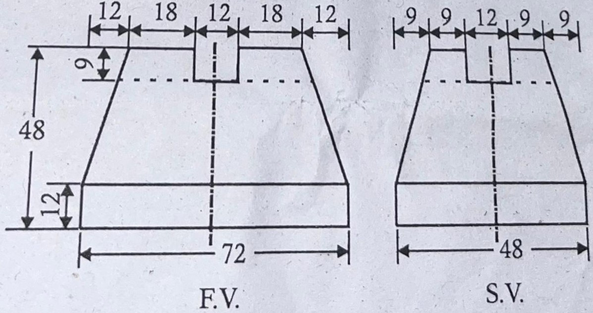

Rajiv Gandhi Proudyogiki Vishwavidyalaya, Bhopal
New Scheme Based On AICTE Flexible Curricula
Common to All Disciplines | First Year
2L-0T-2P 3 Credits
Unit- I : Introduction to Engineering Drawing & Curves
Module 1: Introduction to Engineering Drawing covering, Principles of Engineering Graphics and their significance, usage of Drawing instruments, lettering, Conic sections including the Rectangular Hyperbola (General method only); Cycloid, Epicycloid, Hypocycloid and Involute; Scales – Plain, Diagonal and Vernier Scales.
Previous Years questions appears in RGPV exam.
Q.1) An area of 144 sq cm on a map represents an area of 36 sq km on the field. Find the RF of the scale of the map and draw a diagonal scale to show km, hectometres and decametres and to measure up to 10 km. Indicate on the scale a distance 7 km, 5 hectometres and 6 decimetres. (Nov-2022)
Q.2) Construct a conic when the distance of its focus from its directrix is equal to 50 mm and its eccentricity is $2/3$. Name the curve; mark its major axis and minor axis. Draw a tangent at any point, P on the curve. (Nov-2022)
Q.3) a) Fill in the blanks: Graphics can be converted into hard copy with a __________. (Dec-2023)
b) Draw an angle of $45^\circ$ and $135^\circ$ with the help of Scale of Chords. (Dec-2023)
Q.4) The distance of 352 km between two cities, on a road map, is represented by a line of length 70.4 mm. Draw a diagonal scale to read up to single kilometer and long enough to measure up to 900 km. show on the scale a distance of 649 km. (Dec-2023)
Q.5) Construct a Conic section having eccentricity of $3/4$ and focus 25 mm from directrix. Measure its major and minor axes and the distance between two foci. (Dec-2023)
Q.6) A bicycle has a 650 mm diameter wheels. Draw the locus of a point P on the circumference of a wheel for its complete revolution when it passes over a segmental arched culvert of radius 1950 mm. (Dec-2023)
Q.7) What are Scale? Classify its different types, also describe how RF is calculated. (June-2023)
Q.8) A rectangular plot of land area 0.45 hectare, is represented on a map by a similar rectangle of 5 sq. cm. Calculate the RF of the map, Also draw a scale to read up to single metre from the map, the scale should be long enough to measure up to 400 metres. (June-2023)
Q.9) An inelastic string is unwound to a length of 122 mm from a drum of $\phi$ 30 mm. Draw the locus of free end of the string which is held taut during unwinding. (June-2023)
Q.10) What is scale? Classify its different types. What are the main uses of scale? (June-2024)
Q.11) Construct a vernier scale to read meters, decimeters and long enough to measure up to 6 meters when 1 meter is represented by 2.5 centimeters. Find R.F. and show on it a distance of 4.33 meters. (June-2024)
Q.12) Construct a parabola when the distance between focus from the directrix is equal to 60 mm. Draw a tangent and normal at any point on the parabola. (June-2024)
Q.13) The distance between two stations is 100 km and on a road map it is shown by 30 cm. Draw a diagonal scale and indicate 46.8 km and 32.4 km on it. (Dec-2024)
Q.14) Draw an epicycloids, given that radii of generating and directing circle as r = 20 mm and R = 72 mm respectively. Also draw a normal and tangent at any point on the curve. (Dec-2024)
Q.15) A thread is unwinds itself from a cylindrical drum of 60 mm in radius. Draw the locus of the free end of the thread for unwinding through an angle of 180°. (Dec-2024)
Q.16) Compare diagonal scale and Vernier scale in terms of construction and precision. Provide a situation in engineering where each is used. (June-2025)
Q.17) A water tank of size 27 m³ was represented in the drawing by 216 cm³ size. Construct a Vernier Scale for the same to measure upto 5 meter. Also show on it the distance of 3.95 meter and 0.042 meter. (June-2025)
Q.18) A coin 30 mm diameter rolls on a straight line on a table. Plot and name the locus of a point lying on the circumference for one complete revolution. (June-2025)
Q.19) Write short notes on: Epicycloid. (Nov-2022, June-2025)
Expected Sample Questions for Dec-2025 Exam (Based on Syllabus Analysis)
Q.1) Construct a Diagonal Scale of RF = 1/32 showing yards, feet, and inches and to measure up to 4 yards. (Predicted)
Q.2) Draw an Ellipse by Concentric Circles method given the major axis as 100 mm and minor axis as 60 mm. (Predicted)
Q.3) Draw a Rectangular Hyperbola given a point P on it at a distance of 30 mm and 40 mm from the asymptotes. (Predicted)
Q.4) Draw the Involute of a square of side 30 mm. (Predicted)
Q.5) Explain the principle of Vernier Scale and derive the formula for Least Count. (Predicted)
Unit - II : Orthographic Projections
Module 2: Orthographic Projections covering, Principles of Orthographic Projections- Conventions - Projections of Points and lines inclined to both planes; Projections of planes inclined Planes - Auxiliary Planes.
Previous Years questions appears in RGPV exam.
Q.1) The length of the front view of a line CD which is parallel to HP and inclined $30^\circ$ to VP is 50 mm. The end C of the line is 15 mm in front of VP and 25 mm above HP. Draw the projections of the line and find its true length. (Nov-2022)
Q.2) A line PS 65 mm has its end P, 15 mm above the HP and 15 mm in front of the VP. It is inclined at $55^\circ$ to the HP and $35^\circ$ to the VP. Draw its projections. (Nov-2022)
Q.3) Fill in the blanks:
i) The number of mutually perpendicular planes that may surround an object in space is __________.
ii) In the orthographic projection, the projectors are __________ to the plane of projection.
iii) In the first angle projection, the object is imagined to be placed __________.
iv) In __________ projection, any view is so placed that it represents the side of the object nearer to it. (Dec-2023)
Q.4) The plan of a line PQ 75 mm long, measures 54 mm. The midpoint of the line is 50 mm from VP and 15 mm from the HP. The point Q is 24 mm from the VP. Draw its projections and find the inclinations with HP and VP. Also locate its traces. (Dec-2023)
Q.5) A regular hexagonal lamina 30 mm side has a corner on HP. Its surface is inclined at $45^\circ$ to the HP and the plan of the diagonal through the corner, which is in the HP makes an angle of $45^\circ$ with the VP. Draw its projections. (Dec-2023)
Q.6) What is meant by Projection? Explain the principle of projection and Differentiate between First Angle and Third Angle Projections. (Dec-2023, Dec-2024, June-2025)
Q.7) The projections a'b' and ab of a line AB are 65 mm and 50 mm long, respectively. The midpoint of the line is 38 mm in front of VP and 30 mm above HP. End A is 10 mm in front of the VP and nearer to it. End B is nearer to the HP. Draw the projections of the line, find its true length. (June-2023)
Q.8) A regular hexagonal lamina 40 mm side has a square hole of 25 mm side centrally cut through it. Draw its projections when it is resting on one of its sides on HP with its surface inclined at $60^\circ$ to VP and its corner nearest to VP is 24 mm from VP. (June-2023)
Q.9) A straight line segment is 100 mm long, measures 80 mm in plan and 70 mm in elevation. The middle point M is situated 36 mm above H.P. and 46 mm in front of V.P. Draw the top and front views of the line AB. (June-2024)
Q.10) Name the methods which are employed to determine the length and true inclinations of a straight line. (June-2024)
Q.11) A rectangular plate ABCD measuring 45 mm x 35 mm, has its diagonal AC inclined at $30^\circ$ to the H.P. where as the diagonal BD makes an apparent angle of $45^\circ$ to V.P. Draw its projection. (June-2024)
Q.12) Draw the projections of a pentagonal plane, side 25 mm, resting in the H.P. on one of its edges. The plane of pentagon is inclined at $45^\circ$ to the H.P. and the perpendicular, from the midpoint of the resting edge, makes an angle of $30^\circ$ with the V.P. (June-2024)
Q.13) A line AB 120 mm long is inclined at 45° to HP and 30° to the VP. It's midpoint P is in VP and 20 mm above HP. The end A is in the third quadrant and B is in the first quadrant. Draw the projections of the line AB. (Dec-2024)
Q.14) Draw the projections of a regular hexagon of 25 mm side having one of its sides in the H.P. and inclined at 60° to the V.P. and its surface making an angle of 45° with the H.P. (Dec-2024)
Q.15) Draw the projections of a rhombus having 100 mm and 40 mm long diagonals. The bigger diagonal is inclined at 30° to H.P. with one of the end point in H.P. an the smaller diagonal is parallel to both the planes. (Dec-2024)
Q.16) A line AB 70 mm long is inclined at an angle of $30^\circ$ to HP. Its end A is 10 mm above the HP and 15 mm infront of VP. The front view is 50 mm. Draw the projection of line AB. (June-2025)
Q.17) Draw the projection of a regular hexagonal lamina of 30 mm side having one of its edge in the VP and inclined at $60^\circ$ to HP and the surface making an angle of $40^\circ$ with the VP. (June-2025)
Q.18) Write short notes on: Traces of a line. (June-2025)
Expected Sample Questions for Dec-2025 Exam (Based on Syllabus Analysis)
Q.1) A line AB 80 mm long has its end A 20 mm above HP and 30 mm in front of VP. It is inclined at 45° to HP and 30° to VP. Draw its projections. (Predicted)
Q.2) Draw the projections of a circle of 50 mm diameter resting on HP on a point A on the circumference, its plane inclined at 45° to HP and the top view of the diameter AB making 30° angle with VP. (Predicted)
Q.3) Explain the concept of Auxiliary Planes. Draw the projection of a point on an Auxiliary Vertical Plane. (Predicted)
Q.4) A semicircular plate of 80 mm diameter has its straight edge in the VP and inclined at 45° to the HP. The surface of the plate makes an angle of 30° with the VP. Draw its projections. (Predicted)
Q.5) Determine the true length and true inclination of a line PQ given its top view and front view lengths and positions of ends. (Predicted)
Unit - III : Projections of Regular Solids
Module 3: Projections of Regular Solids covering, those inclined to both the Planes- Auxiliary Views; Draw simple annotation, dimensioning and scale. Floor plans that include: windows, doors, and fixtures such as WC, bath, sink, shower, etc.
Previous Years questions appears in RGPV exam.
Q.1) Draw the projections of a pentagonal prism of base 25 mm side and 50 mm long. The prism is resting on one of its rectangular faces in V.P with its d is inclined at $45^\circ$ to HP. (Nov-2022)
Q.2) A right circular cone of axis height 80 mm is resting on one of its generators in HP. Draw its projections. The base is 40 mm dia. (Nov-2022)
Q.3) A triangular prism of side of base 30 mm and axis 55 mm long lies on one of its rectangular faces in HP with its axis parallel to VP. Draw its Projection. (Dec-2023, June-2023)
Q.4) A right circular cone, diameter of base 50 mm and axis 62 mm long, rest on its base rim on HP with its axis parallel to VP and one of the elements perpendicular to HP. Draw the projections. (June-2023)
Q.5) A regular tetrahedron edge of base 30 mm, is resting on one of its edges on the horizontal plane. The resting edge makes an angle of $45^\circ$ to V.P. and the face containing the edge makes an angle of $30^\circ$ to H.P. Draw its projections. (June-2024)
Q.6) A right pentagonal prism 90 mm high with each side of the base 30 mm is resting on one of the base edges on the horizontal plane and inclined at 30° to V.P. and the face containing that edge is inclined at 45° to the H.P. Draw the projections of the pentagonal prism. (Dec-2024)
Q.7) Draw the projection of a hexagonal prism base 30 mm and axis 75 mm long when its axis is inclined at $30^\circ$ to the VP and parallel to HP and edge of the base is perpendicular to HP. (June-2025)
Q.8) Draw the Floor plan of a single BHK house showing all details like window, doors and other fixtures. Assume suitable dimension for plan. (June-2025)
Expected Sample Questions for Dec-2025 Exam (Based on Syllabus Analysis)
Q.1) A square pyramid, base 40 mm side and axis 65 mm long, has its base on the HP and all the edges of the base equally inclined to the VP. Draw its projections. (Predicted)
Q.2) A hexagonal prism of base side 30 mm and axis 60 mm rests on one of its rectangular faces on HP with the axis inclined at 45° to VP. Draw its projections. (Predicted)
Q.3) A cylinder of 40 mm diameter and 60 mm height is resting on a point on the rim of its base on HP, such that the axis is inclined at 30° to HP. Draw its projections. (Predicted)
Q.4) Draw the projections of a cone, base 50 mm diameter and axis 75 mm long, lying on a generator on the ground with the top view of the axis making an angle of 45° with the VP. (Predicted)
Q.5) Draw a simple floor plan of a room of size 4m x 5m showing a door and a window with standard symbols. (Predicted)
Unit - IV : Sections of Solids & Development of Surfaces
Module 4: Sections and Sectional Views of Right Angular Solids covering, Prism, Cylinder, Pyramid, Cone – Auxiliary Views; Development of surfaces of Right Regular Solids - Prism, Pyramid, Cylinder and Cone; Draw the sectional orthographic views of geometrical solids, objects from industry and dwellings (foundation to slab only).
Previous Years questions appears in RGPV exam.
Q.1) Fill in the blanks:
v) In half sectional view, __________ of the object is imagined to be removed.
vi) Sectional views reveal __________. (Dec-2023)
Q.2) A right regular square pyramid, edge of base 35 mm and height 50 mm, rest on its base on HP with its base edges equally inclined to VP. A section plane perpendicular to VP and inclined to HP on $32^\circ$, cuts the pyramid bisecting its axis. Draw the projections and true shape of the section of truncated pyramid. (Dec-2023, June-2023)
Q.3) Develop the lateral surface of an oblique cone, diameter of the base 40mm and height 40 mm having its axis inclined at $60^\circ$ to its base. (June-2023)
Q.4) A right circular cylinder, base $\phi$54 and axis 75 mm long, with a circular hole of $\phi$30 mm, drilled centrally through it, rests on its base on H.P. A section plane $45^\circ$ to H.P. cuts the axis at a distance of 20 mm from the top end face. Draw the sectional top view and true shape of section. (June-2024)
Q.5) A square prism of 50 mm edge and 65 mm height stands on one of its faces on the H.P. with a vertical face making $45^\circ$ angle with V.P. A horizontal hole of 25 mm diameter is drilled centrally through the prism such that the hole passes through the opposite vertical edges of the cube. Draw the development of the surface of the prism and the hole. (June-2024)
Q.6) A right regular cylinder 50 mm diameter of base and 65 mm long lies on one of its generators, on the H.P. with its axis inclined at 30° to the V.P., cuts the cylinder and bisects its axis. Draw the apparent and true sections of the solid. (Dec-2024)
Q.7) A right cylinder of 30 mm diameter and 35mm height of axis, inclined at 30° to H.P. and passes 18 mm from base along the axis. Draw the development of the truncated cylinder. (Dec-2024)
Q.8) A hexagonal Pyramid side of base 30 mm and axis 60 mm long rest with its base on HP and one of the edge of its base is parallel to VP. It is cut by a horizontal section plane at a distance of 38 mm above the base. Draw its Front view and Sectional Top View. (June-2025)
Q.9) A cone of base diameter 55 mm and axis 65 mm is lying on one of its generator on the horizontal plane with its axis parallel to VP. It is cut by a vertical plane section parallel to one of the generator and bisecting the axis. Draw its sectional front view and True shape of section. (June-2025)
Expected Sample Questions for Dec-2025 Exam (Based on Syllabus Analysis)
Q.1) A pentagonal prism, base 30 mm side and axis 60 mm long, is resting on its base on HP. It is cut by a section plane inclined at 45° to HP and passing through the midpoint of the axis. Draw the development of the lateral surface of the truncated prism. (Predicted)
Q.2) A cone, base 50 mm diameter and axis 60 mm long, is resting on its base on HP. It is cut by a section plane perpendicular to VP, inclined at 30° to HP and passing through a point on the axis 20 mm from the apex. Draw the sectional top view and true shape of the section. (Predicted)
Q.3) Draw the development of the lateral surface of a cylinder of 40 mm diameter and 60 mm height, which is cut by a plane inclined at 60° to the axis. (Predicted)
Q.4) A square pyramid of base side 40 mm and axis 60 mm is resting on its base on HP. It is cut by a section plane perpendicular to VP and inclined at 45° to HP, bisecting the axis. Draw the development of the lateral surface of the truncated pyramid. (Predicted)
Q.5) A cube of 40 mm side is cut by a section plane perpendicular to VP and inclined at 45° to HP, passing through the top corner. Draw the sectional top view and true shape of the section. (Predicted)
Unit - V : Isometric Projections & Computer Graphics (CAD)
Module 5: Isometric Projections covering, Principles of Isometric projection – Isometric Scale, Isometric Views, Conventions; Isometric Views of lines, Planes, Simple and compound Solids; Conversion of Isometric Views to Orthographic Views and Vice-versa, Conventions;
Module 6: Overview of Computer Graphics... Theory of CAD software [Menu System, Toolbars, Drawing Area, etc.]...
Module 7: Customisation & CAD Drawing...
Module 8: Annotations, layering & other functions...
Module 9: Demonstration of a simple team design project... Introduction to Building Information Modelling (BIM).
Previous Years questions appears in RGPV exam.
Q.1) Draw the isometric view of a hexagonal prism having side of base 25 mm and axis 65 mm long resting on its base on HP. (Nov-2022)
Q.2) Give some examples where the layering concept is useful to use. (Nov-2022, Dec-2023, June-2023, June-2024, Dec-2024)
Q.3) Name and explain five edit commands used in CAD. (Nov-2022, Dec-2023, June-2024)
Q.4) Explain the various advantages of CAD. (Nov-2022, Dec-2023)
Q.5) a) What is the use of UCS icon? Explain in detail?
b) Write about Dialog boxes and windows in CAD software. (Nov-2022, June-2025)
Q.6) Explain the various commands used for transformation of an object: i) Move, ii) Copy, iii) Rotate, iv) Mirror. (Nov-2022)
Q.7) Explain the different methods used for drawing a circle in AutoCAD. (Nov-2022)
Q.8) Write short notes of the following: i) Isometric projection, iii) Basic drawing command. (Nov-2022, Dec-2024)
Q.9) A cube 30 mm edge is placed centrally on the top of a cylindrical block of $\phi$ 52 mm and 20 mm height. Draw the isometric drawing of the solid. (Dec-2023, June-2023)
Q.10) Write short note on: View ports. (Dec-2023, June-2023, June-2025)
Q.11) A cube of 30 mm edge is placed centrally on the top of a cylindrical block of $\phi$ 52 mm and 20 mm height. Draw the isometric drawing of the solid. (June-2023)
Q.12) Explain the purpose of Zoom Command. (June-2023, June-2024)
Q.13) What is 3D modeling? Explain types of modeling. (June-2024)
Q.14) A cube of 40 mm side rests centrally on a square block of 60 mm edges and 20 mm thick. Draw the isometric projection of the two objects with the edges of the two blocks mutually parallel to each other. (June-2024)
Q.15) Explain layering concept with examples. How is it implemented in CAD software? (Dec-2024)
Q.16) A square pyramid rests centrally over a cylindrical block. Draw the isometric projection of the arrangement. Consider the pyramid has a base with 25 mm side and 40 mm long axis whereas the cylindrical block has a base with 50 mm diameter and 20 mm thickness. (Dec-2024)
Q.17) Write short notes on the following: i) Modify commands, ii) Building Information Modeling (BIM). (Dec-2024)
Q.18) Discuss how CAD software supports the visualization and creation of complex 3D objects such as compound solids. Include references to specific tools or features. (June-2025)
Q.19) Discuss the construction and use of an Isometric Scale. (June-2025)
Q.20) Draw the Isometric view of given figure. (June-2025)

Q.21) Write short notes on: Tool bar. (June-2025)
Expected Sample Questions for Dec-2025 Exam (Based on Syllabus Analysis)
Q.1) Construct an Isometric Scale and explain its significance in Isometric Projections. (Predicted)
Q.2) Draw the Isometric View of a Frustum of a Cone, base diameter 50 mm, top diameter 25 mm, and height 60 mm, resting on its base on HP. (Predicted)
Q.3) Explain the concept of Layers in CAD. How do layers help in managing complex drawings? (Predicted)
Q.4) What is Building Information Modelling (BIM)? Discuss its advantages over traditional CAD drafting. (Predicted)
Q.5) Explain the function of the following CAD commands: (i) Fillet (ii) Chamfer (iii) Trim (iv) Extrude. (Predicted)